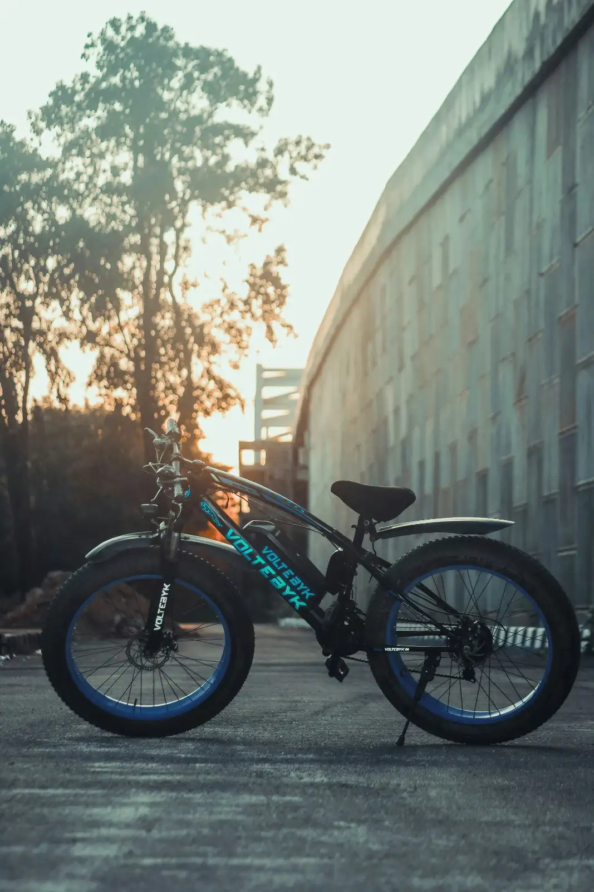

FLEET OVERVIEW PANEL // SECURE_CORE
Telemetry register online. Form loops and status indicators display active vehicle profiles.

MODEL: CYBERCYCLE X-1

SYSTEM_METRICS // STATUS_OK
FLEET CAPACITY
84.2% ONLINE
SUBSTRATE VOLTAGE
3.62 V NOMINAL
THERMAL INDEX
32.4°C STABLE
DELIVERY CYCLES
14 DAYS DELAY
TOKEN ALLOCATIONS MANAGER // SECURE_LEDGER
Fulfillment ledger online. Priority allocation records synced with factory node registers.

ACTIVE_QUEUE_STREAM // CRYPTO_VERIFIED
CyberCycle X-1 Variant Build
Operator Address Identity Packet: jeevi***@gmail.com
VoltCruiser Pro Urban Build
Operator Address Identity Packet: pilot***@voltedge.com
Overclock Alpha Chassis Edition
Operator Address Identity Packet: tech***@stackly.com
LIVE TELEMETRY STREAMER // DIAGNOSTICS_MATRIX
Active system signal corridors online. Monitoring computational variable air vectors and motor flux registers.


DECRYPTED_OUTPUT_LOG // REAL_TIME
[01_OK]: Dual-phase axial flux motor cluster deploying real-time torque vectoring loops.
[02_OK]: Nitrogen fluid-cooling lines actively stabilizing silicon substrate micro-impedance variables.
[03_OK]: Millimeter-wave radar obstacle detection modems reporting absolute path authorization codes.
PERFORMANCE ANALYTICS METRICS // CRYPTO_ANALYTICS
Solid-state core diagnostics online. Compiling electrolyte layer thermal thresholds and dissipation coefficients.

CELL TYPE: SILICON SOLID-STATE

CORE_LAYER_DATA // BALANCED
ELECTROLYTE LATENCY
0.02 ms
THERMAL MARGIN
+45.2% SAFETY
DISCHARGE VELOCITY
85.4 A/h
REGEN EFFICIENCY
+15.2% RETURN